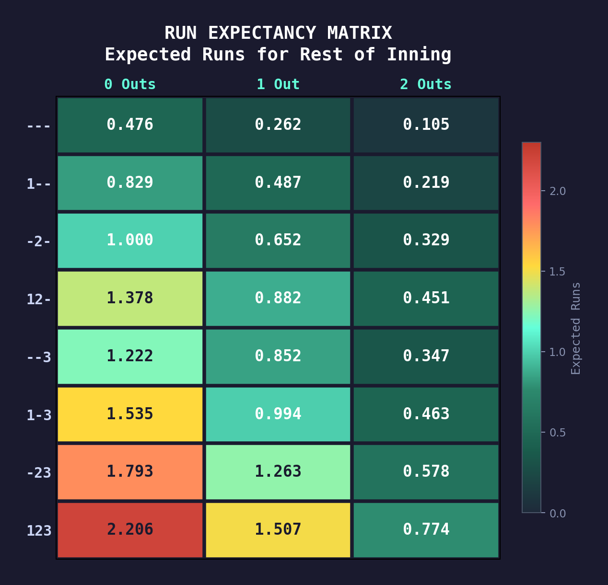
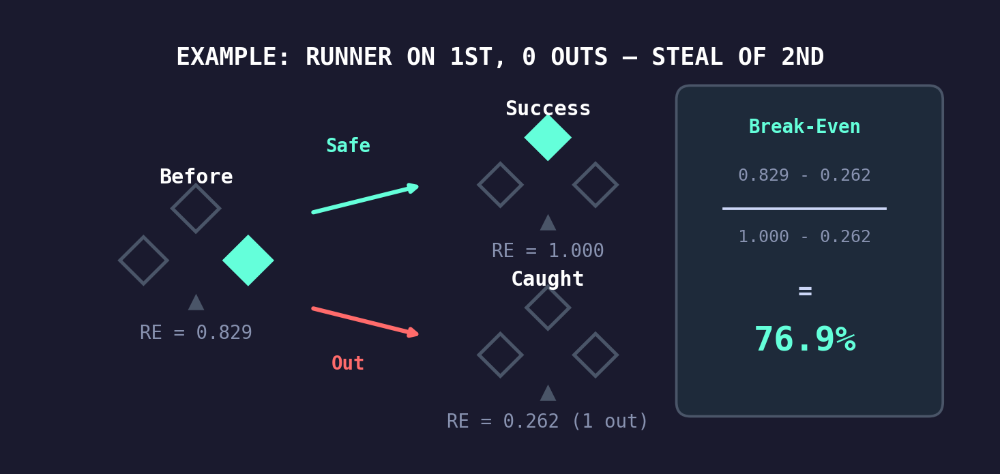
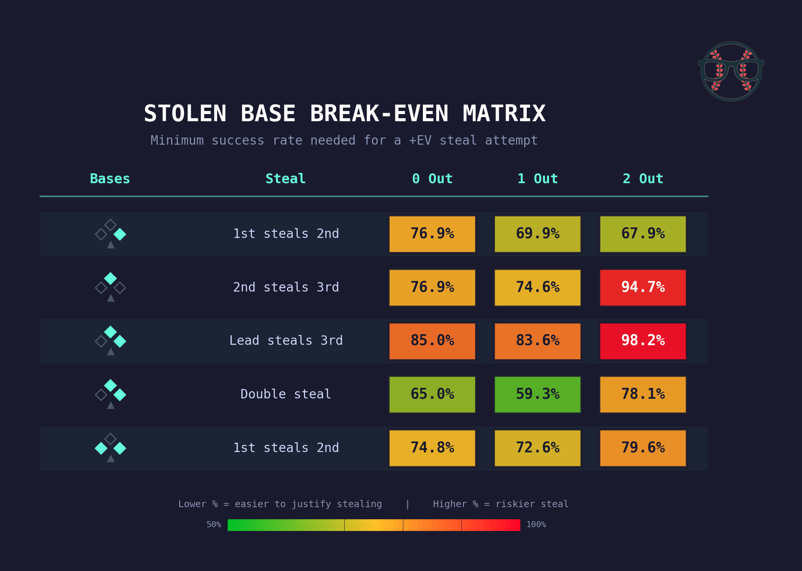
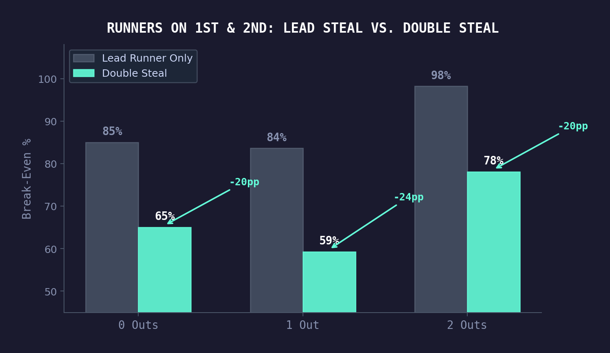
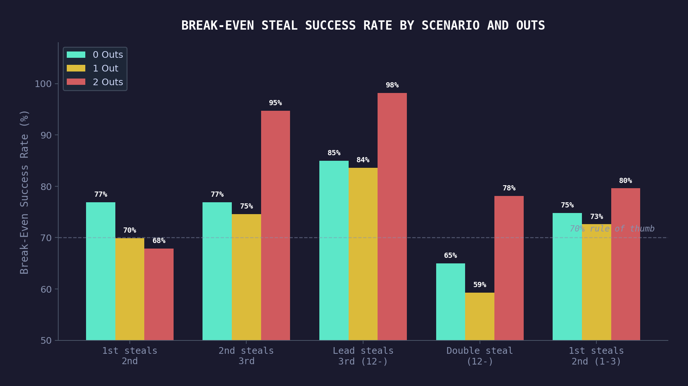

Every stolen base attempt is a gamble. A successful steal puts a runner in scoring position. A failed one burns an out and removes a baserunner. But how good does the odds need to be for the gamble to pay off?
We built a Monte Carlo simulation to answer that question for every realistic steal scenario, and the results challenge some conventional wisdom about when to run.
The Problem
Baseball managers have always relied on gut feel and general rules of thumb when deciding whether to send a runner. The classic guideline says you need about a 70% success rate to justify stealing second base. But that number doesn’t account for the base/out state – and as we’ll show, context matters a lot.
The real question isn’t “can this runner steal a base?” It’s “does stealing this base in this specific situation produce more runs than standing still?”
Run Expectancy: The Foundation
Before we can evaluate steals, we need to know what each base/out state is actually worth. Run expectancy tells us the average number of runs a team will score from any given point in an inning through the end of that inning.
We calculated run expectancy by simulating 20,000 half-innings for each of the 24 possible base/out states (8 base combinations × 3 out states) using a Monte Carlo model. The model uses league-average event probabilities, spray direction distributions, and a runner advancement matrix built from real Statcast data.

A few things jump out immediately:
- Outs are expensive. Going from 0 outs to 1 out in any base state drops your expected runs by roughly 35–45%.
- The difference between 2nd and 3rd isn’t as big as you’d think. Runner on 2nd with 0 outs is worth 1.000 runs; runner on 3rd with 0 outs is 1.222. That’s only a 0.222 run gain for a successful steal of third.
- With 2 outs, the gap shrinks further. Runner on 2nd, 2 outs: 0.329. Runner on 3rd, 2 outs: 0.347. Almost identical – the runner is nearly as likely to score from second as from third with two outs.
This is the table that powers everything that follows.
The Method
For each steal scenario, there are two possible outcomes:
- Success: The runner advances, and the new base/out state has a different (hopefully higher) run expectancy
- Failure: The runner is caught, adding an out and removing them from the bases
We can find the break-even point – the minimum success rate where the steal has positive expected value – with a simple formula:

Break-Even % = (REcurrent − REfailure) / (REsuccess − REfailure)
If your runner’s estimated success rate is above the break-even, send him. If it’s below, hold him.
The Results
We evaluated five steal scenarios that cover the vast majority of real-game stolen base attempts:

Stealing Second (Runner on First Only)
The textbook steal. Our model shows break-evens of 76.9% with 0 outs, 69.9% with 1 out, and 67.9% with 2 outs.
The 70% rule of thumb holds up reasonably well here, especially with 1 or 2 outs. But with 0 outs, the bar is a bit higher than most people assume – you need closer to 77% to justify it. That’s because with nobody out, you still have plenty of plate appearances to drive the runner in without risking the out.
Stealing Third (Runner on Second Only)
This is where things get interesting. Stealing third with 0 or 1 out requires about 75–77% success, which is similar to stealing second. But with 2 outs, the break-even spikes to 94.7% – meaning you almost never want to attempt it.
Why? Because the run expectancy gain from 2nd to 3rd with 2 outs is tiny (0.329 to 0.347), but the cost of being caught is total (the inning is over). You’re risking everything for almost nothing.
The Double Steal: A Hidden Edge
Here’s the most interesting finding. With runners on first and second, teams have two options: send just the lead runner to third, or attempt a double steal.

The difference is dramatic:
- Lead runner steals 3rd only: 85% / 84% / 98% break-even – extremely hard to justify
- Double steal (both advance): 65% / 59% / 78% break-even – much more favorable
The double steal with 1 out has the lowest break-even on the entire board at 59.3%. The reason: you’re going from runners on 1st and 2nd (RE: 0.882) to runners on 2nd and 3rd (RE: 1.263) – a massive 0.381 run gain. And if caught, you drop to runner on 2nd with 2 outs (RE: 0.329), which isn’t catastrophic.
Meanwhile, sending only the lead runner to third gains much less (1st & 2nd to 1st & 3rd is a smaller RE jump), and if he’s caught you’re down to just a runner on first with an extra out.
The takeaway: if you’re going to steal with runners on first and second, send both runners. A double steal is dramatically easier to justify than sending the lead runner alone.
Stealing Second with Runners on First and Third
With runners on the corners, the steal of second has break-evens of 74.8% (0 out), 72.6% (1 out), and 79.6% (2 out). These are slightly higher than a straight steal of second because the runner on third provides a safety net – even if the steal fails, you still have the lead runner on third (though with an extra out).
The 2-out number is notably higher at 79.6% because getting caught at second with 2 outs ends the inning and strands the runner on third.
Practical Takeaways
1. The 70% rule is a decent starting point, but context matters.
Stealing second with 0 outs actually requires closer to 77%. With 2 outs, 68% is enough. The “right” number shifts by up to 10 percentage points depending on the situation.
2. Don’t steal third with 2 outs. Almost ever.
You need a 95%+ success rate. Unless you’re facing a catcher who literally cannot throw, hold the runner. The same applies to sending just the lead runner from 1st & 2nd – 98% break-even with 2 outs means it’s essentially never worth it.
3. Double steals are underrated.
At 59% break-even with 1 out, the double steal is the single most favorable steal opportunity on the board. Teams should be looking for double steal opportunities with runners on first and second far more often than they currently do.
4. Outs are the most valuable currency in baseball.
The running theme across every scenario: outs are precious. Any time you risk trading a baserunner for an out, the bar for justification is high. The scenarios where steals are cheapest are the ones where the positional gain is largest relative to the out risk.

Methodology
This analysis uses a Monte Carlo simulation engine that models half-innings from any base/out state. For each state, we simulate 20,000 half-innings using:
- League-average event probabilities (22% K rate, 8.5% BB rate, BIP mix including ground ball outs, fly ball outs, singles, doubles, triples, and home runs)
- Spray direction distributions (38% pull, 34% center, 28% opposite field)
- A runner advancement probability matrix built from historical Statcast data, accounting for the specific event type, base state, outs, and spray direction
The break-even probabilities are derived algebraically from the simulated run expectancy values, not from simulating the steal attempts themselves. This gives us clean, interpretable results tied directly to the underlying run environment.
All code and data behind this analysis are part of the Basenerd analytics platform.